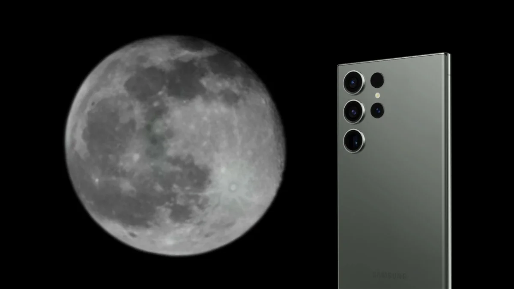

Samsung responde a la controversia por las fotos de la Luna que logran los modelos Ultra
Un usuario de Reddit acusó a la compañía de falsear las imágenes que toman los teléfonos de la compañía, y que logran resultados con mucho detalle; Samsung explicó cómo es la metodología para lograr esa calidad

Samsung ha aclarado que las cámaras de sus teléfonos combinan varias tecnologías para ofrecer imágenes lunares con gran detalle y nitidez, libres de ruidos, como pueden ser su optimizador Stable Optimizer o Zoom Lock, que permite mantener el foco cuando el dispositivo está en movimiento y no se utiliza un trípode.
La compañía surcoreana ha emitido un comunicado en el que ha detallado cómo procesan sus smartphones las fotografías del satélite tras la polémica surgida en Reddit, donde se ha cuestionado que las que ofrece la marca distan de las que realmente logra.
Fuente (S):
- La nación